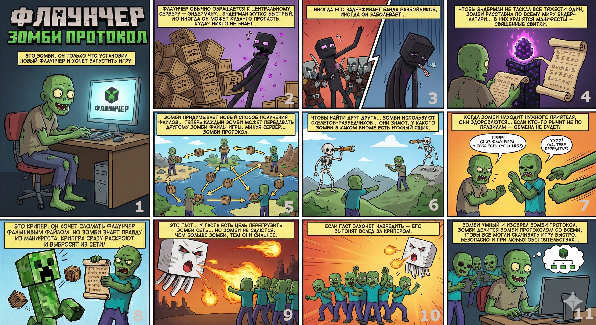

Внедряем «Зомби-протокол» в Флаунчер 🧟
«Зомби-протокол» — это технология, которая помогает скачивать файлы игры гораздо быстрее и надежнее. Она объединяет ресурсы наших серверов и других учеников, чтобы вы могли начать заниматься как можно скорее.

Наш лаунчер работает очень хитро. Он не просто качает файлы по ссылке, а запускает два поиска одновременно:
- Ищет файлы на наших основных серверах.
- Ищет файлы у других учеников, которые находятся к вам ближе всего.
Откуда файлы придут быстрее — оттуда лаунчер их и заберет. Это как если бы за пиццей поехали сразу два курьера из разных мест: вы получите её от того, кто приедет первым!
Умная сеть (LAN/WAN)
Лаунчер использует все доступные пути: он ищет файлы как в глобальном интернете, так и в вашей локальной сети (например, у одноклассников в кабинете). Это делает загрузку максимально быстрой.
Полная безопасность
Каждый кусочек файла проверяется на ошибки и вирусы. Подменить файл или прислать «битые» данные невозможно — лаунчер просто их не примет, пока не убедится в их подлинности.
Без зависаний
Лаунчер следит за тем, чтобы процесс загрузки не нагружал ваш компьютер слишком сильно. Вы сможете спокойно заниматься своими делами, пока всё необходимое скачивается.
Умная подстройка
Система сама понимает, насколько быстрый у вас интернет. Если ваша сеть перегружена, лаунчер снизит свою активность, чтобы не мешать вашей работе.
Доступность всегда
Даже если основные сервера будут временно недоступны или интернет будет сильно ограничен, вы всё равно сможете получить файлы от других учеников.
Анонимность
Специальный режим защиты позволяет скрыть ваш IP-адрес от сторонних систем, обеспечивая максимальную приватность во время учебы.
Технология сейчас находится на тестовом этапе и создает децентрализованную сеть. Для её полноценной работы и «неконтролируемого развертывания» нужно большое количество устройств одновременно.
То есть «на старте», если участников мало, магии не случится. Поэтому нам важно запустить её массово, чтобы сеть стала устойчивой.
Запросы сети
При первом запуске появится стандартный запрос Windows на сетевое взаимодействие — это необходимо для работы протокола.
Антивирусы
На этапе развертывания софт может вызвать подозрения у антивирусов. Это классическая ситуация для новых P2P-решений.
Надежное сохранение
Файлы сначала качаются в специальное временное место и попадают в систему только после полной проверки. Это исключает риск того, что данные «сломаются» при обрыве интернета.
Автоматический режим
Система сама выбирает режим работы, подстраиваясь под мощность вашего ПК, чтобы не нагружать его лишней работой.
Лимит отдачи
Если вы хотите ограничить потребление интернета, в настройках есть удобный слайдер, который позволяет точно выставить лимит скорости отдачи файлов.
Честный код
Весь код программы открыт. Любой разбирающийся человек может проверить, что в ней нет ничего лишнего и она работает именно так, как заявлено.
Если вы принципиально против или заметили негативные эффекты — всё отключается в один клик в настройках:
Система обязана адаптироваться, поэтому любые проблемы скорее всего являются багами, о которых стоит сообщить.